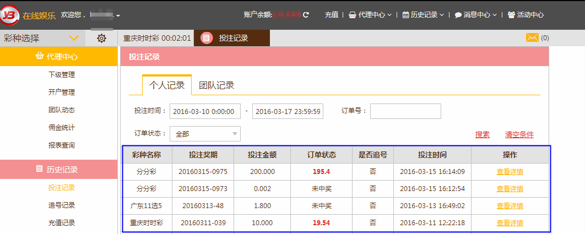

<h3 class="text-center m-top-md">投注记录查询</h3>
<div class="padding-lg">
  <p>
    在首页导航栏的”历史记录”里选择“投注记录”。
  </p>
  <p class="thumbnail inline-block">
    
  </p>

  <p>
    点击进去以后，可根据投注时间、订单号和订单状态搜索投注的记录。
  </p>
  <p class="thumbnail inline-block">
    
  </p>
</div>